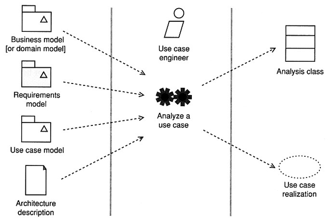

Software Engineering
Use Case Analysis - RealizationsAgenda
- Analyze a Use Case
- Goals for Use Case Realization
- What Are Use Case Realizations?
- Interactions
- Lifelines and Messages
- Add Course Use Case
- Delete Course Use Case
- Combined Fragments and Operators
- Communication Diagrams
Analyze a Use Case

- Analysis classes model the static structure of a system, and use case
realizations show how instances of the analysis classes interact to
realize the functionality of the system.
- This is part of the dynamic view of the system.
- Find out which analysis classes interact to realize the
behavior specified by use cases-you may uncover new analysis classes as
you perform use case realization
- Find out what messages instances of these classes need to
send to each other to realize the specified behavior. This tells you
- the key operations your analysis classes need to have
- the key attributes of the analysis classes
- important relationships between analysis classes
- Update your use case model, requirements model, and
analysis classes with the information you get from use case
realization. Keep all models consistent and in step with each other.
- Use case realizations show how classes collaborate to realize system
functionality.
- You turn a use case, which is a specification of functional
requirements, into a class diagram and interaction
diagram, which are a high-level specification of the system.

Each use case has exactly one use case realization, so instead you add
appropriate elements as listed in the table below.
- Interaction - a unit of behavior of a context classifier
- In use case realization a context classifier is a use case.
- You create one or more interactions to demonstrate how behavior
specified by the use case can be realized by instances of classifiers
(either in in the analysis-analysis classes, or in the design-design
classes) passing messages back and forth.
Add Course Use Case

Interaction diagrams are not verbatim transcriptions of a use case; they
are illustrations of how the use case behavior is realized by analysis
classes.
Delete Course Use Case

State Invariants and Constraints
You can show the state of the instances on the lifelines by using state
invariants.
Adding state invariants to a sequence diagrams can be a very useful analysis
technique because it allows you to capture the key states in the lifecycle of
a lifeline.

Capture the following constraints:
- the order must be paid for in full by a single payment
- the items specified in the order can only be delivered after
payment
- the items are delivered to the customer within 28 days of payment